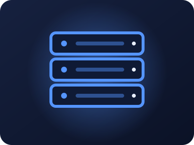

פיתוח
בונים את המוצר: שרתים, ממשקים ואיכות. ארבעה תפקידי פיתוח, ולכל אחד יום עבודה אחר.
לכל מקצועות פיתוח ←מהקפה הראשון ועד פריסת הגרסה – הצצה אל מאחורי הקלעים של 13 מקצועות טכנולוגיים. בחרו מסלול, עברו בין תחנות היום וגלו איך נראית העבודה באמת.
לכל מקצוע שגרת עבודה אחרת, כלים שונים ואתגרים ייחודיים. בחרו מסלול כדי לראות את המקצועות שבו.

בונים את המוצר: שרתים, ממשקים ואיכות. ארבעה תפקידי פיתוח, ולכל אחד יום עבודה אחר.
לכל מקצועות פיתוח ←
מחזיקים את המערכות באוויר: ענן, אוטומציה והגנה מפני איומים.
לכל מקצועות תשתיות ואבטחה ←

בכל מקצוע היום מתחלק לארבע תחנות. כך המשימות, שיתופי הפעולה והכלים משתנים מהבוקר ועד הלילה.
סקירת משימות, תיאום עם הצוות ותכנון היום.
עבודה עמוקה: בונים, מנתחים ופותרים בעיות.
בדיקות, ליטוש ושיפור של התוצר.
מסכמים, משחררים ומכינים את מחר.
מדריך PDF עם כל המקצועות ותחנות היום, להורדה ולקריאה בנחת.
גלו תפקיד חדש, השוו בין תחומי עשייה ומצאו מה מדליק אתכם.